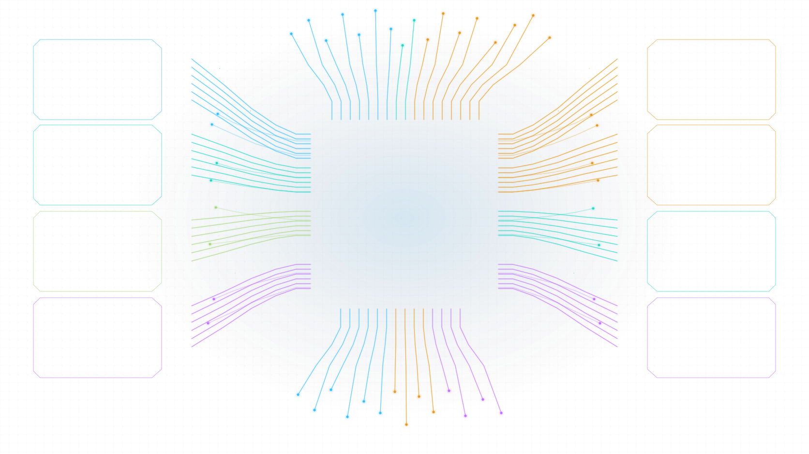

GOVERNANCE
Centralized AI policy, safety and performance control.
POLICY FIELD / ACTIVE
Centralized AI policy, safety and performance control.
POLICY FIELD / ACTIVEHuman oversight for agents, tasks and decisions.
OBSERVER LOOP / STREAMINGModel tuning and profile optimization for best-fit performance.
CGT PROFILE / CALIBRATEDTask and agent coordination across scalable workflows.
FLOW GRAPH / SYNCHRONIZEDIntelligent routing for requests, tasks and optimal agent selection.
ROUTE FABRIC / READYAdvanced policy enforcement for rules, approvals and automated decisions.
DECISION ENGINE / ARMEDContinuous feedback and learning for improved outcomes.
LEARNING LOOP / CLOSEDAuthority, access and guardrail controls.
AUTHORITY GATES / SECURED